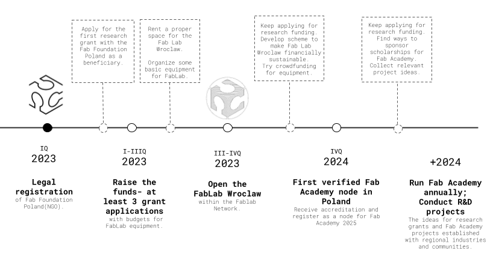

Home

Hello, digital world! | Hello, physical world!
by
Judy Curie | Ania Malinowska
The Fab Foundation Poland - a Polish daugther of the Fab Foundation. The Fab Foundation Poland aims to brige the digital divide and conduct applied research into digital design & fabrication. The actions of the Fab Foundation Poland are primarly aimed for people living currently in Poland: Poles, Ukraininans and other people needing community, new job skills or a digitally fabricated house!
Currently we are working on establishing a Fab Lab facility in Wrocław!
Road Map
